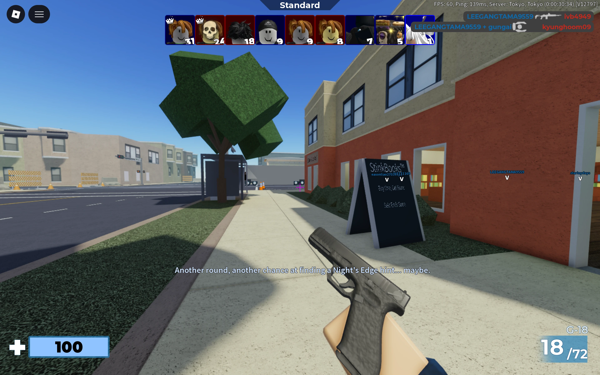
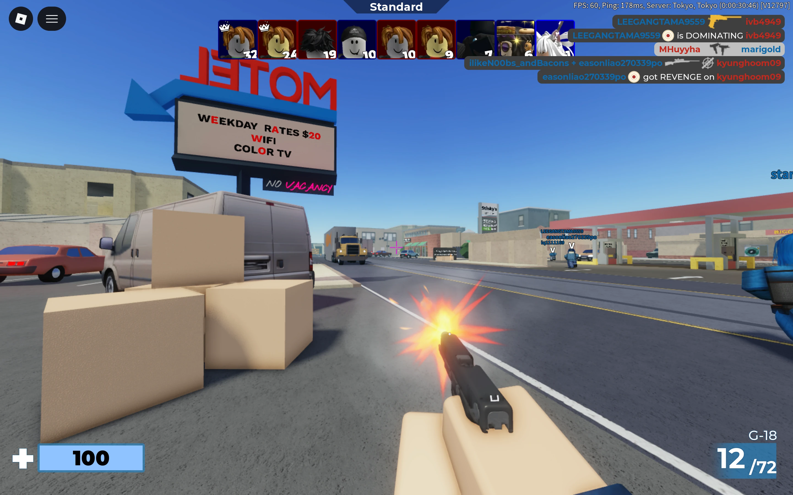
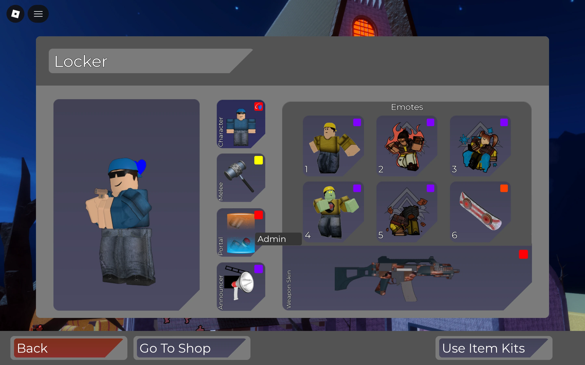
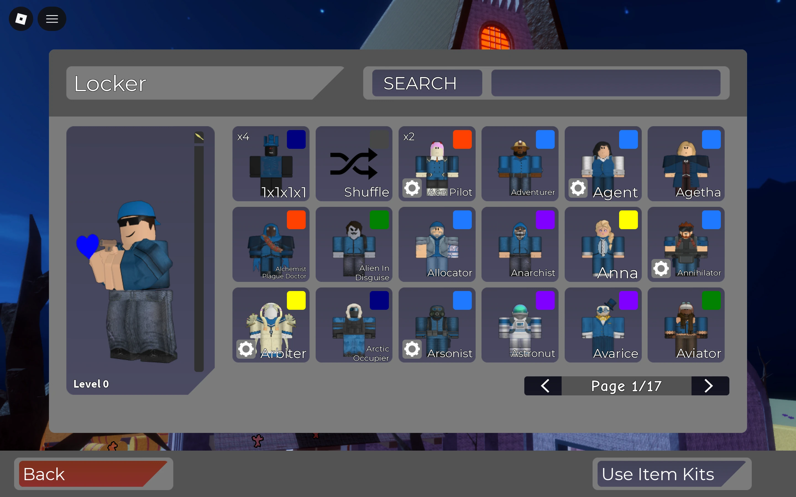
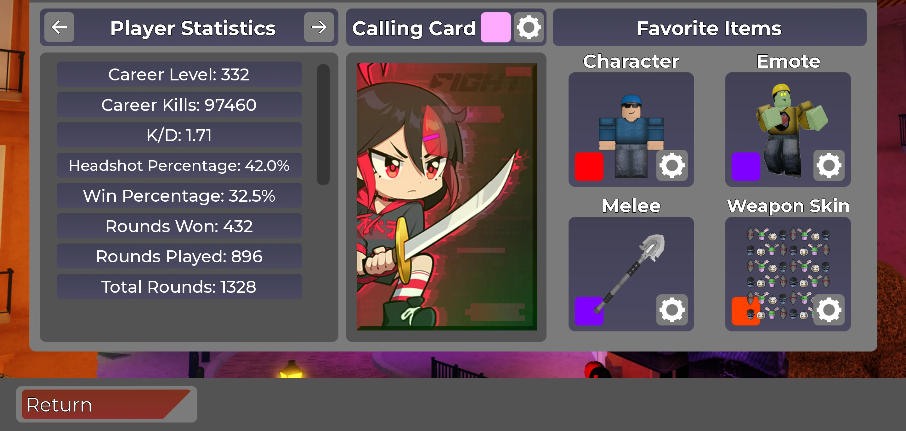
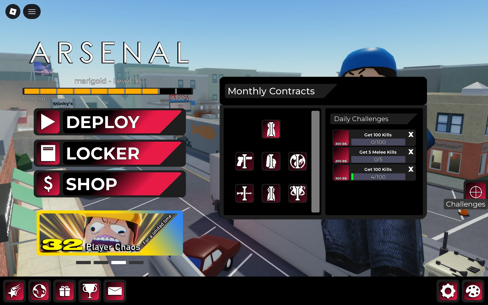

Arsenal
Contributed to Arsenal’s main weapon framework, Gun Game rotation, player data persistence, and battlepass and event progression within the development team.
Programmer · Team-developed game

My contributions
Explore the systems.
Core gameplay programming
The main weapon framework
I contributed to Arsenal’s main weapon framework within the development team. The work involved Lua ModuleScripts and Roblox services as part of the game’s core programming.


Gameplay loop
Gun Game rotation
I worked on Arsenal’s gameplay loop rotation, also known as the Gun Game rotation. This was a core gameplay responsibility within the team’s development of the game.
DataStore persistence
Persistent player data
Worked on persistent inventory, player stats, event progress, and battlepass progress using Roblox DataStore.



Player progression
Battlepass and event progression
I contributed to battlepass and event progression systems, including their associated persistent data. This work included both gameplay progression responsibilities and the relevant data retained between player sessions.

Engineering takeaway
Maintaining Arsenal taught me how early shortcuts in a shared codebase can make later changes harder to maintain and extend.